Five ways to learn this lecture without a wall of text
Two research agents opened and screenshotted 54 real sites on desktop and phone: visual explainers, learning products, newsrooms, engineering blogs and product pages. This page shows what they found and five structurally different ways to turn Lecture 1 into something you look at, play with and remember.
Nothing here is built yet. Pick the ones you want to see as working prototypes.
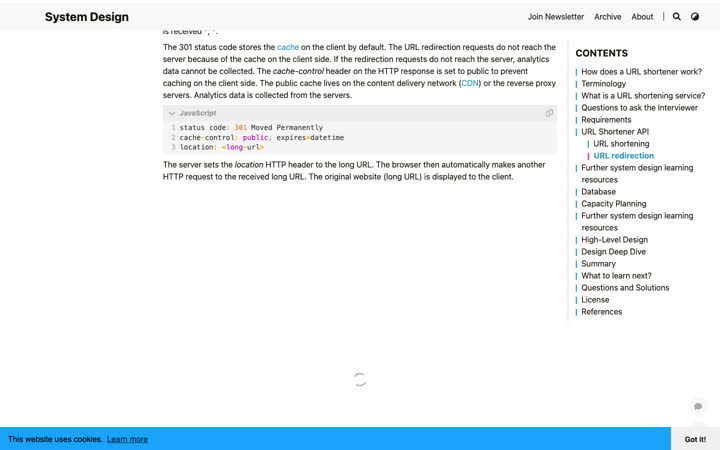
75–85%
of the screen is running text on typical system design sites
Hello Interview and systemdesign.one, measured by the research agent. All six of our earlier samples sat in this group. This is the baseline to beat.
What the best sites do instead
The picture carries the ideaByteByteGo puts five caching strategies in one image; the text below is four bullet points.
Words live inside the drawingJulia Evans and howhttps.works put the sentence in a speech bubble or caption, never beside it.
A toy every few linessamwho.dev and Ciechanowski put a playable widget after almost every paragraph, and colour the words to match it.
One statement per screenApple gives each idea a full screen and hides detail behind small "+" buttons.
A map you can enterroadmap.sh makes the whole subject one diagram; every box is a door.
Characters make systems memorablehowhttps.works turns the browser, the server and the attacker into a bird, a pug and a crab.
Five experience models
01
The Living Map
recommended to prototype
Medium's architecture fills the screen. The lecture is a guided tour across it: each step lights up one part, adds the next piece and shows a single sentence. Click any box to open its card with the full detail.
One screen: the map, one highlighted part, one sentence, an open card.
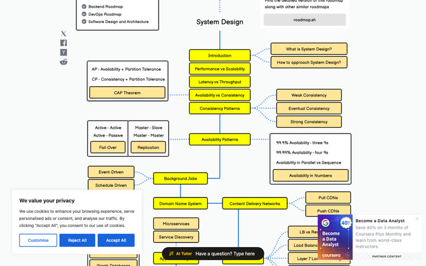
roadmap.sh: the subject as one map.
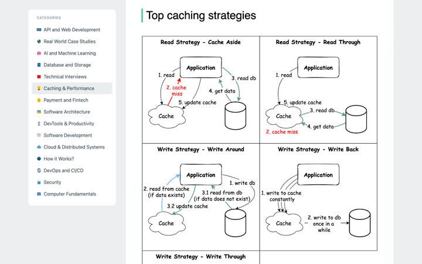
ByteByteGo: the diagram is the lesson.
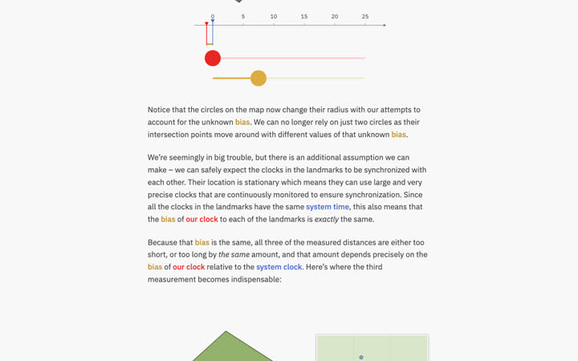
Ciechanowski: a demo every few lines.
Text on screen
About 10–20%. One sentence per step; cards on demand.
Where depth goes
Part cards: concept, numbers, trade-offs, wrong turns, class questions, sources.
Strong
Builds the mental model the lecture is really teaching; doubles as revision.
Risk
Concurrency and protocol details are less spatial; a phone layout needs care.
02
On-Call at Medium
recommended to prototype
You are Medium's engineer. Incidents arrive: the newsletter goes out and the database hits 98% CPU; two claps land at once and the count is wrong. You choose a move, watch what happens, then get the debrief: what the lecture teaches about it.
One screen: an alert, the system reacting, three moves, then a debrief.
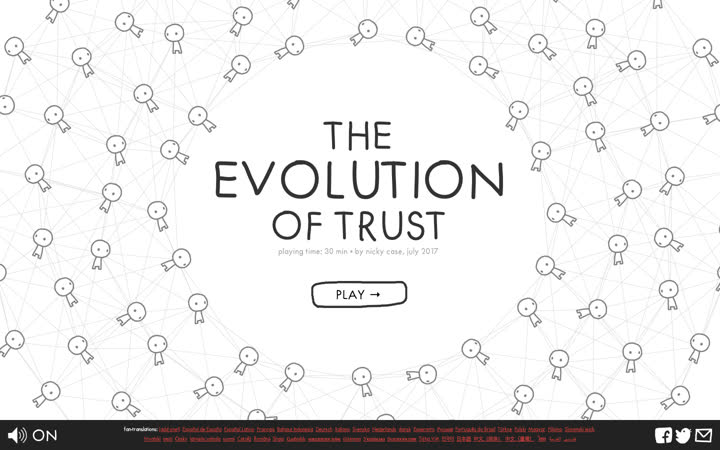
The Evolution of Trust: learn by playing rounds.
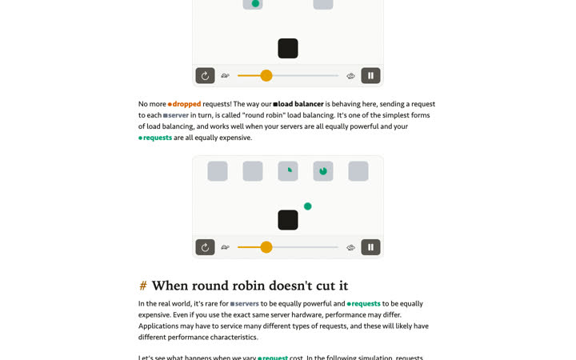
samwho.dev: watch requests drop live.
Text on screen
About 15–25%. Alert line, three choices, short outcome.
Where depth goes
Debrief cards after each incident hold the lecture's full explanation and Q&A points.
Strong
Predict-before-reveal is built in; the class's wrong turns become wrong moves with consequences.
Risk
Most effort to build; some topics need invented incidents, labelled as examples.
03
Episodes
recommended to prototype
The parts of Medium become characters: an overworked Postgres, Redis with sticky notes, a load balancer directing traffic, Kafka as a conveyor belt. Each topic is a short illustrated episode. Every panel has an "engineer view" flip side with the real detail.
One screen: a page of panels; one flipped to the engineer view.
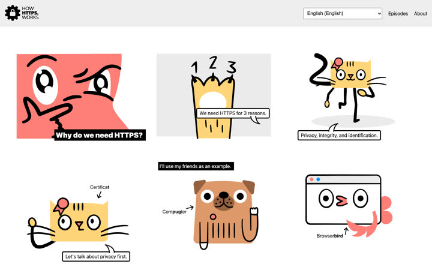
howhttps.works: characters, one line per panel.
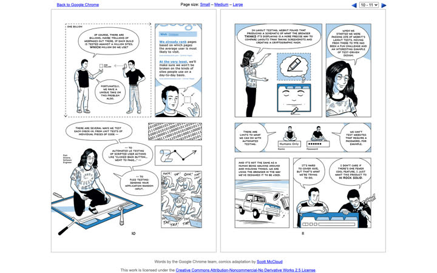
Scott McCloud's Chrome comic: engineering as comics.
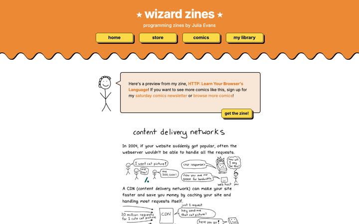
Julia Evans: text inside the drawing.
Text on screen
About 10–15% on the panel side; more on the flip side.
Where depth goes
Engineer-view flips and an end-of-episode "the real numbers" page.
Strong
Most memorable; nothing else in system design teaching looks like it.
Risk
Illustration quality decides everything; cute characters can feel junior to senior engineers.
04
Plates
One idea per full screen. Each plate has one big statement, one diagram and small "+" buttons for detail. You scroll or swipe plate by plate; every few plates ask you to predict the next one.
One screen: one sentence, one picture, detail behind "+".
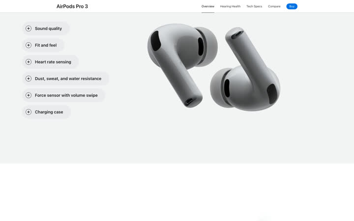
Apple: "+" pills beside one picture.
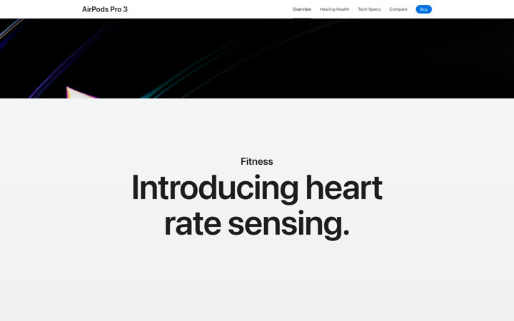
Apple: one statement per screen.
Text on screen
About 10%.
Where depth goes
"+" panels on each plate.
Strong
Calmest and best on phones; fastest to build.
Risk
About 90–120 plates; can feel like slides; depth hides behind clicks.
05
Scale Dial
A single dial runs from 1 reader to 100 million. As you turn it, Medium's architecture changes in front of you. Each stop on the dial shows what broke, the change, and what it cost.
One screen: the system, the dial, and broke / change / cost.
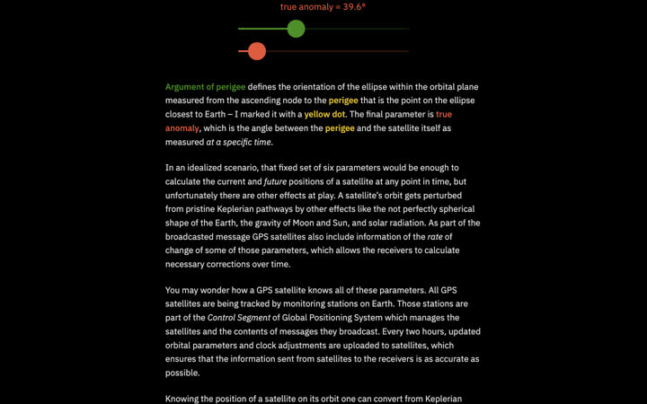
Ciechanowski: sliders that change the picture.
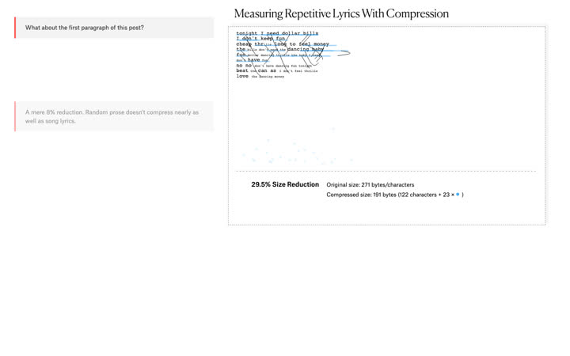
The Pudding: notes beside a changing chart.
Text on screen
About 15%.
Where depth goes
Each stop opens a short stack of cards.
Strong
One unforgettable control; perfect for caching and scaling.
Risk
Concurrency and communication don't map to "more users" cleanly.
My suggestion
Prototype 01 Living Map, 02 On-Call and 03 Episodes on the same slice of content, scaling the database, so you can feel the difference in your hands.
They are the three most different from each other: one spatial, one played, one told as a story. They can also combine later: the Living Map as home, On-Call incidents as the exercises, Episodes as each topic's opener.
Rules for every prototype
Text supports the picture, never the reverse. Screens stay at or under about 25% running text.
No layout from rounds 1 or 2.
All 400 ledger items still have to be reachable; depth lives in cards, flips and debriefs.
Each prototype gets a critic pass on real screenshots before you see it.
Screenshots are from the research agents' captures for study only. Full notes: learn/research/visual/explainers.md and editorial.md (54 sites, 75 patterns).